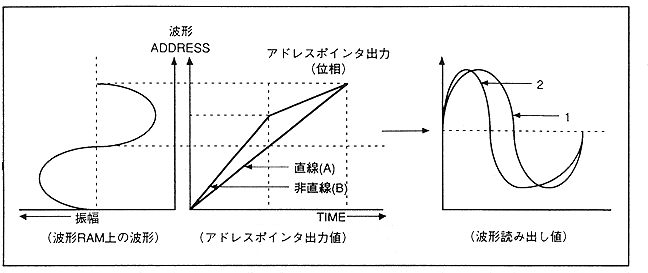
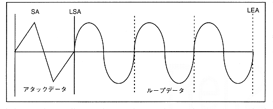

Figure 4.24 Address pointer output value when FM speech synthesis is executed (2)

When the output value of the address pointer is linear (A waveform) as shown in Fig. 4.24, it is output according to the RAM waveform (1 waveform). However, when it becomes a non-linear function (waveform B), the way the waveform is read out changes and the second waveform is output. When the waveform is deformed in this way, the tone changes.
The FM speech synthesis method is applied to distort the waveform by changing the phase value with time. The FM speech synthesis method actually takes the method of adding the output values of other (possibly own) slots as a method of making the address pointer output value (phase value) non-linear. Up to now, the normal mode has been explained as an example. However, reverse loop and alternative loop can be set by changing the "LPCTL" register. The loop data that can be specified by the "LPCTL" register is as shown in Figure 4.25, Figure 4.26, and Figure 4.27.
Figure 4.25 Normal loop
